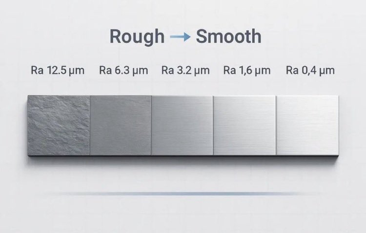

不吃番茄倒吐番茄籽
@bcfqdtfqz
@jun17630250 有一说一底下那个表里后面那仨粗糙度我愣是没看出来有啥区别

横浜打野
@jun17630250
底下评论区洗地的一知半解就别出来卖弄了。
肉眼通过光反的确能观测微米级别的金属粗糙程度，但是依赖的是临界值现象。
3.2μm以上是明显糙痕，1.6μm起到0.8μm是光滑临界值，0.8μm到0.1μm是镜面临界点，0.1μm以内是超光滑。 https://t.co/ectREXJqA6